Publica automaticamente no Facebook e no Instagram ao mesmo tempo. Legendas ricas em keywords (serviço+cidade), hashtags e link da página específica de cada post. Foto nunca repete dentro de 2 semanas. Depois de ~90 dias o próprio cenário recicla os posts. Automação via Make.
fbig_lwr) → baixa a imagem →
publica a foto no Facebook (message = legenda) → publica a foto no Instagram (mesma legenda) →
reagenda o mesmo post para daqui 90 dias. Roda Seg/Qua/Sex entre 11:30 e 12:30.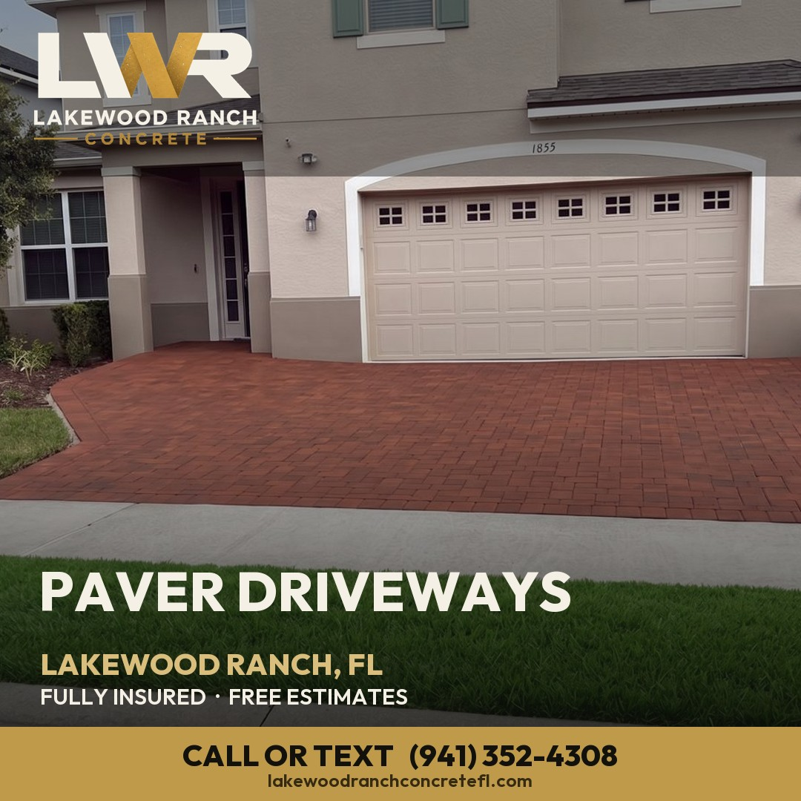
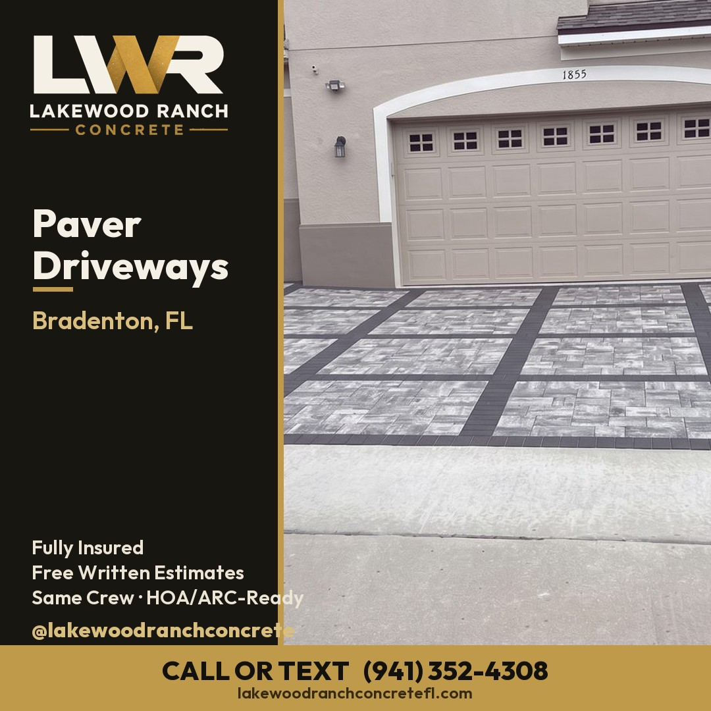
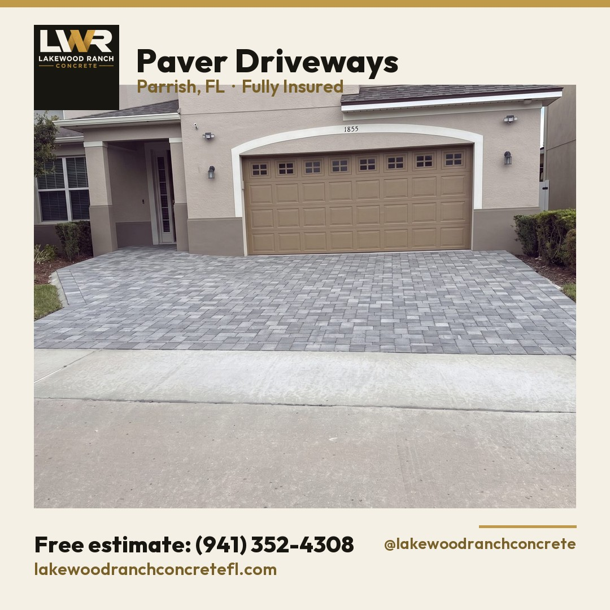
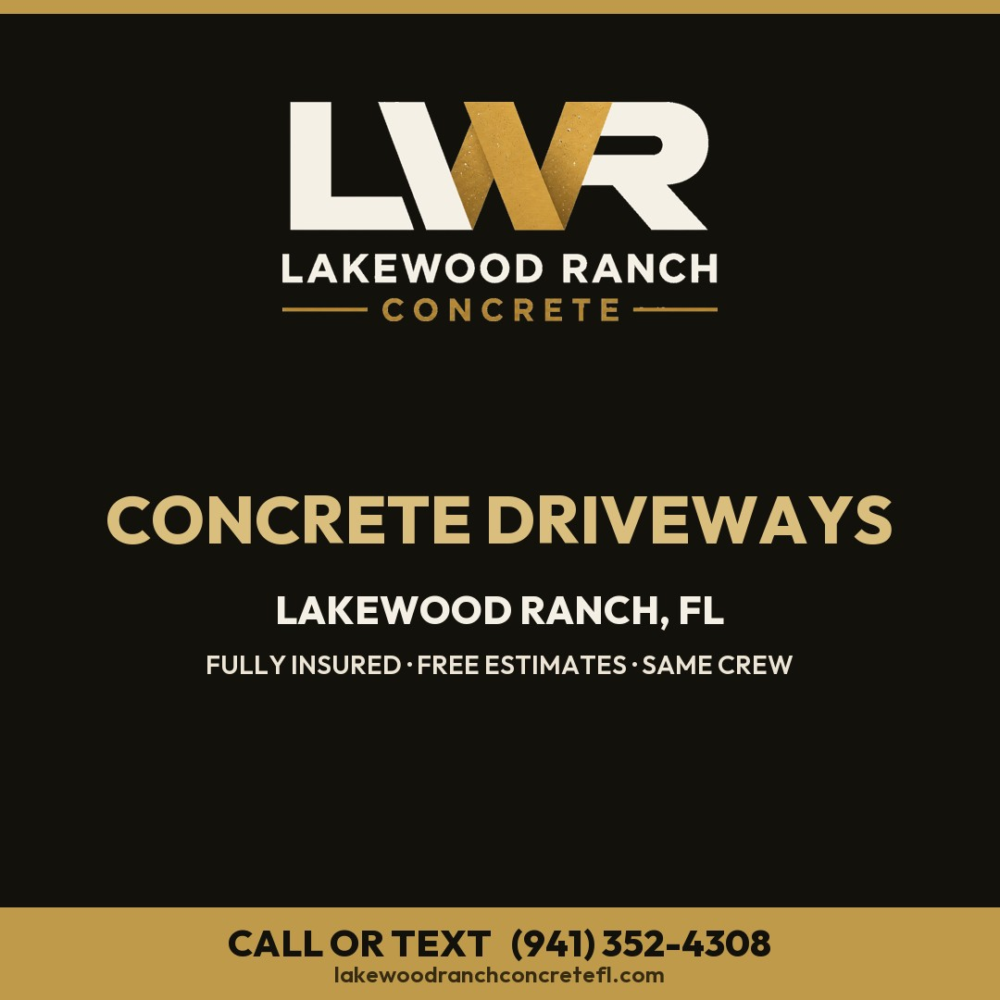
T1 Foto+degradê · T2 Painel lateral · T3 Moldura creme · T4 Card tipográfico (concreto)
| WEEK 1 | ||
| Monday 2026-07-20 Service Spotlight T1-Photo |
Paver Driveways in Lakewood Ranch, FL done right. Lakewood Ranch Concrete installs a paver driveway set on a fully compacted base with polymeric joint sand. We install concrete & paver driveways, patios, pool decks, travertine, stamped concrete, walkways & sealing across Lakewood Ranch, Bradenton, Sarasota & Parrish and all of Manatee & Sarasota County. Fully insured. Free written estimates.
📞 Free estimate: (941) 352-4308
🔗 https://lakewoodranchconcretefl.com/paver-driveways/lakewood-ranch/
#PaverDriveways #LakewoodRanch #LakewoodRanchFL #Concrete #Pavers #ConcreteContractor #Hardscape #Hardscaping #Bradenton #Sarasota #ManateeCounty #FloridaHomes #CurbAppeal #OutdoorLiving #SWFL |
|
| Wednesday 2026-07-22 Free-Estimate Offer T2-Panel |
Free paver driveways estimate in Bradenton, FL. Paver Driveways — a paver driveway set on a fully compacted base with polymeric joint sand. Serving Bradenton, Lakewood Ranch, Palmetto & Ellenton and the Suncoast. No pressure, fully insured, same crew from start to finish.
📞 Free estimate: (941) 352-4308
🔗 https://lakewoodranchconcretefl.com/paver-driveways/bradenton/
#PaverDriveways #Bradenton #BradentonFL #Concrete #Pavers #ConcreteContractor #Hardscape #Hardscaping #LakewoodRanch #Sarasota #ManateeCounty #FloridaHomes #CurbAppeal #OutdoorLiving #SWFL |
|
| Friday 2026-07-24 Tip / Educational T3-Frame |
Parrish homeowners: most sunken pavers trace back to a rushed, under-compacted base. Our paver driveways start with real base prep and engineered joints — not shortcuts. Paver Driveways plus concrete & paver driveways, patios, pool decks, travertine, stamped concrete, walkways & sealing across Parrish, Ellenton, Palmetto & Bradenton. Fully insured, free estimates.
📞 Free estimate: (941) 352-4308
🔗 https://lakewoodranchconcretefl.com/paver-driveways/parrish/
#PaverDriveways #Parrish #ParrishFL #Concrete #Pavers #ConcreteContractor #Hardscape #Hardscaping #LakewoodRanch #Bradenton #Sarasota #ManateeCounty #FloridaHomes #CurbAppeal #OutdoorLiving #SWFL |
|
| WEEK 2 | ||
| Monday 2026-07-27 Recent Work T4-Solid |
Another concrete driveways finished in Lakewood Ranch, FL — a poured concrete driveway engineered for Florida heat and shifting soil. Your Lakewood Ranch project could be next. We install concrete & paver driveways, patios, pool decks, travertine, stamped concrete, walkways & sealing across Lakewood Ranch, Bradenton, Sarasota & Parrish. Fully insured, free written estimates, HOA/ARC-ready.
📞 Free estimate: (941) 352-4308
🔗 https://lakewoodranchconcretefl.com/concrete-driveways/lakewood-ranch/
#ConcreteDriveways #LakewoodRanch #LakewoodRanchFL #Concrete #Pavers #ConcreteContractor #Hardscape #Hardscaping #Bradenton #Sarasota #ManateeCounty #FloridaHomes #CurbAppeal #OutdoorLiving #SWFL |
|
| Wednesday 2026-07-29 Service Spotlight T1-Photo |
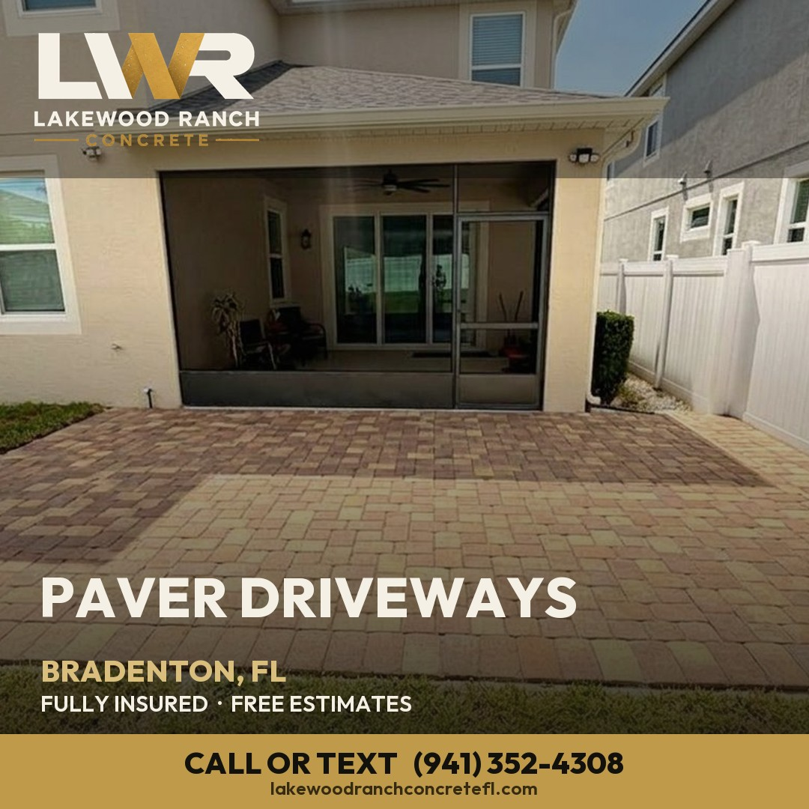 |
Paver Driveways in Bradenton, FL done right. Lakewood Ranch Concrete installs a paver driveway set on a fully compacted base with polymeric joint sand. We install concrete & paver driveways, patios, pool decks, travertine, stamped concrete, walkways & sealing across Bradenton, Lakewood Ranch, Palmetto & Ellenton and all of Manatee & Sarasota County. Fully insured. Free written estimates.
📞 Free estimate: (941) 352-4308
🔗 https://lakewoodranchconcretefl.com/paver-driveways/bradenton/
#PaverDriveways #Bradenton #BradentonFL #Concrete #Pavers #ConcreteContractor #Hardscape #Hardscaping #LakewoodRanch #Sarasota #ManateeCounty #FloridaHomes #CurbAppeal #OutdoorLiving #SWFL |
| Friday 2026-07-31 Free-Estimate Offer T2-Panel |
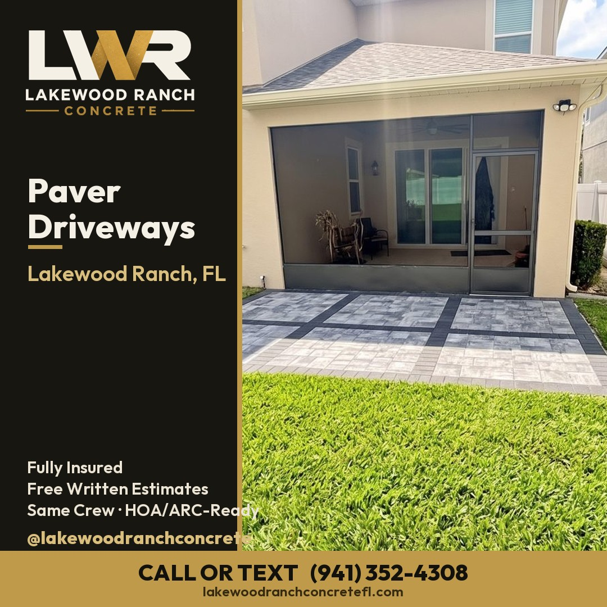 |
Free paver driveways estimate in Lakewood Ranch, FL. Paver Driveways — a paver driveway set on a fully compacted base with polymeric joint sand. Serving Lakewood Ranch, Bradenton, Sarasota & Parrish and the Suncoast. No pressure, fully insured, same crew from start to finish.
📞 Free estimate: (941) 352-4308
🔗 https://lakewoodranchconcretefl.com/paver-driveways/lakewood-ranch/
#PaverDriveways #LakewoodRanch #LakewoodRanchFL #Concrete #Pavers #ConcreteContractor #Hardscape #Hardscaping #Bradenton #Sarasota #ManateeCounty #FloridaHomes #CurbAppeal #OutdoorLiving #SWFL |
| WEEK 3 | ||
| Monday 2026-08-03 Tip / Educational T3-Frame |
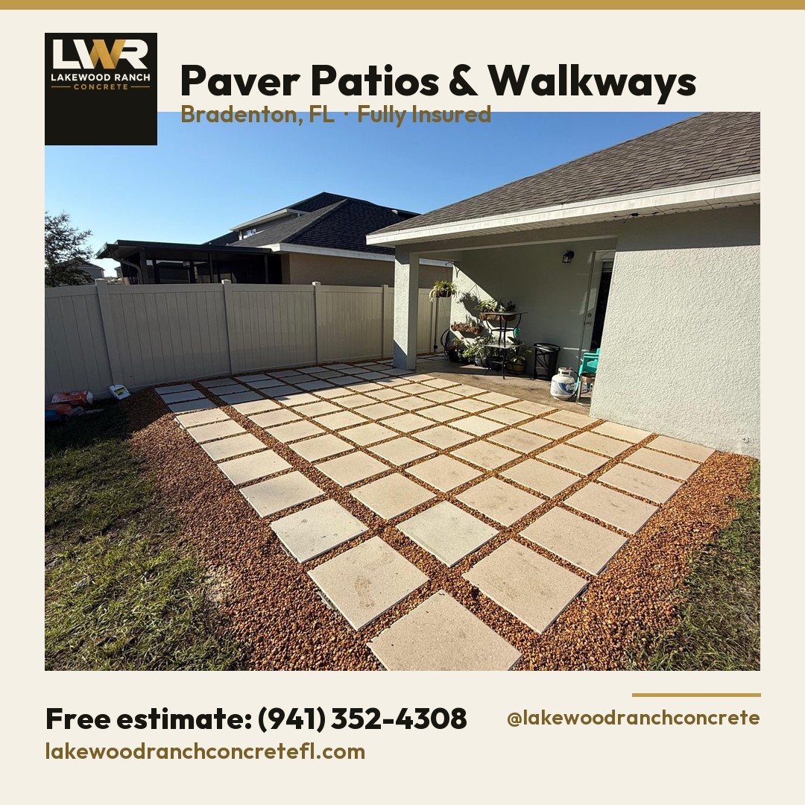 |
Bradenton homeowners: polymeric sand and edge restraint are what keep pavers from spreading. Our paver patios start with real base prep and engineered joints — not shortcuts. Paver Patios & Walkways plus concrete & paver driveways, patios, pool decks, travertine, stamped concrete, walkways & sealing across Bradenton, Lakewood Ranch, Palmetto & Ellenton. Fully insured, free estimates.
📞 Free estimate: (941) 352-4308
🔗 https://lakewoodranchconcretefl.com/paver-patios-walkways/bradenton/
#PaverPatios #Bradenton #BradentonFL #Concrete #Pavers #ConcreteContractor #Hardscape #Hardscaping #LakewoodRanch #Sarasota #ManateeCounty #FloridaHomes #CurbAppeal #OutdoorLiving #SWFL |
| Wednesday 2026-08-05 Recent Work T4-Solid |
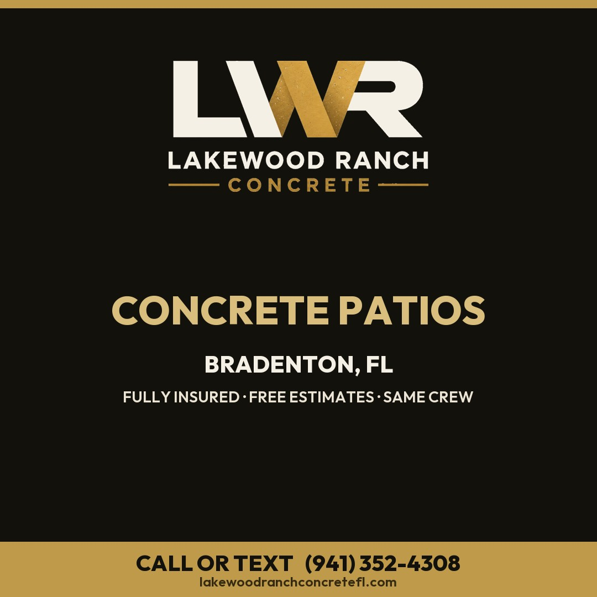 |
Another concrete patios finished in Bradenton, FL — a broom, smooth or stamped concrete patio built for Gulf Coast sun and drainage. Your Bradenton project could be next. We install concrete & paver driveways, patios, pool decks, travertine, stamped concrete, walkways & sealing across Bradenton, Lakewood Ranch, Palmetto & Ellenton. Fully insured, free written estimates, HOA/ARC-ready.
📞 Free estimate: (941) 352-4308
🔗 https://lakewoodranchconcretefl.com/concrete-patios/bradenton/
#ConcretePatios #Bradenton #BradentonFL #Concrete #Pavers #ConcreteContractor #Hardscape #Hardscaping #LakewoodRanch #Sarasota #ManateeCounty #FloridaHomes #CurbAppeal #OutdoorLiving #SWFL |
| Friday 2026-08-07 Service Spotlight T1-Photo |
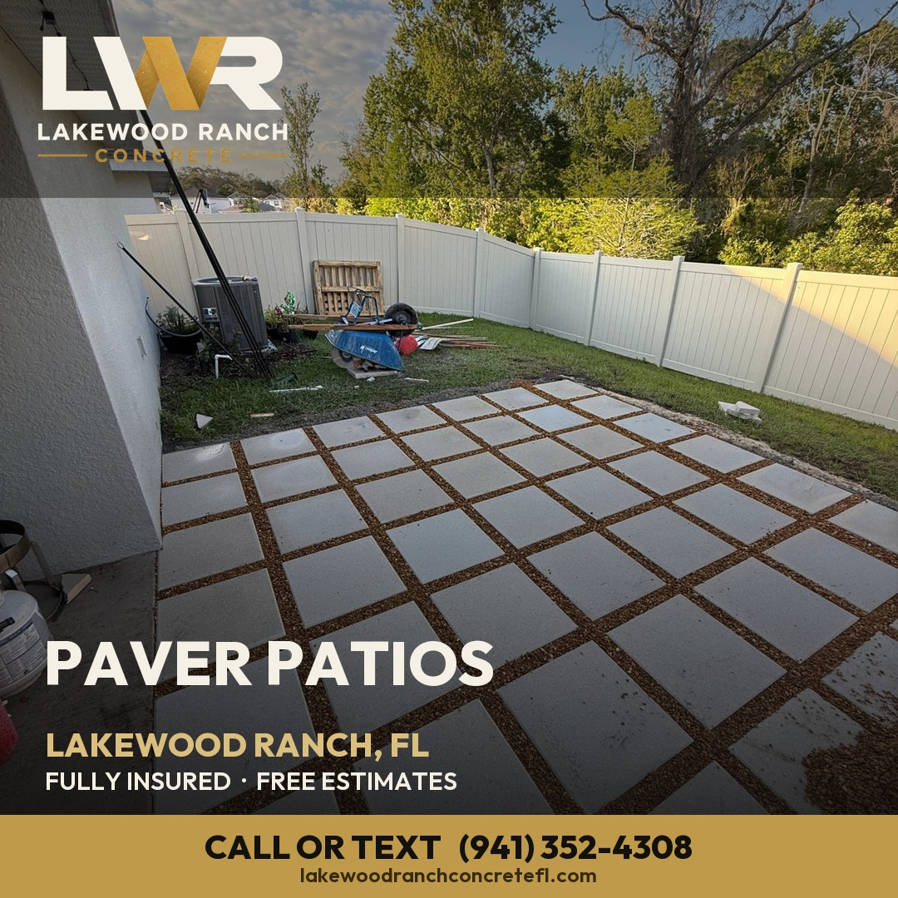 |
Paver Patios & Walkways in Lakewood Ranch, FL done right. Lakewood Ranch Concrete installs a paver patio or walkway that won't settle, shift or wash out. We install concrete & paver driveways, patios, pool decks, travertine, stamped concrete, walkways & sealing across Lakewood Ranch, Bradenton, Sarasota & Parrish and all of Manatee & Sarasota County. Fully insured. Free written estimates.
📞 Free estimate: (941) 352-4308
🔗 https://lakewoodranchconcretefl.com/paver-patios-walkways/lakewood-ranch/
#PaverPatios #LakewoodRanch #LakewoodRanchFL #Concrete #Pavers #ConcreteContractor #Hardscape #Hardscaping #Bradenton #Sarasota #ManateeCounty #FloridaHomes #CurbAppeal #OutdoorLiving #SWFL |
| WEEK 4 | ||
| Monday 2026-08-10 Free-Estimate Offer T2-Panel |
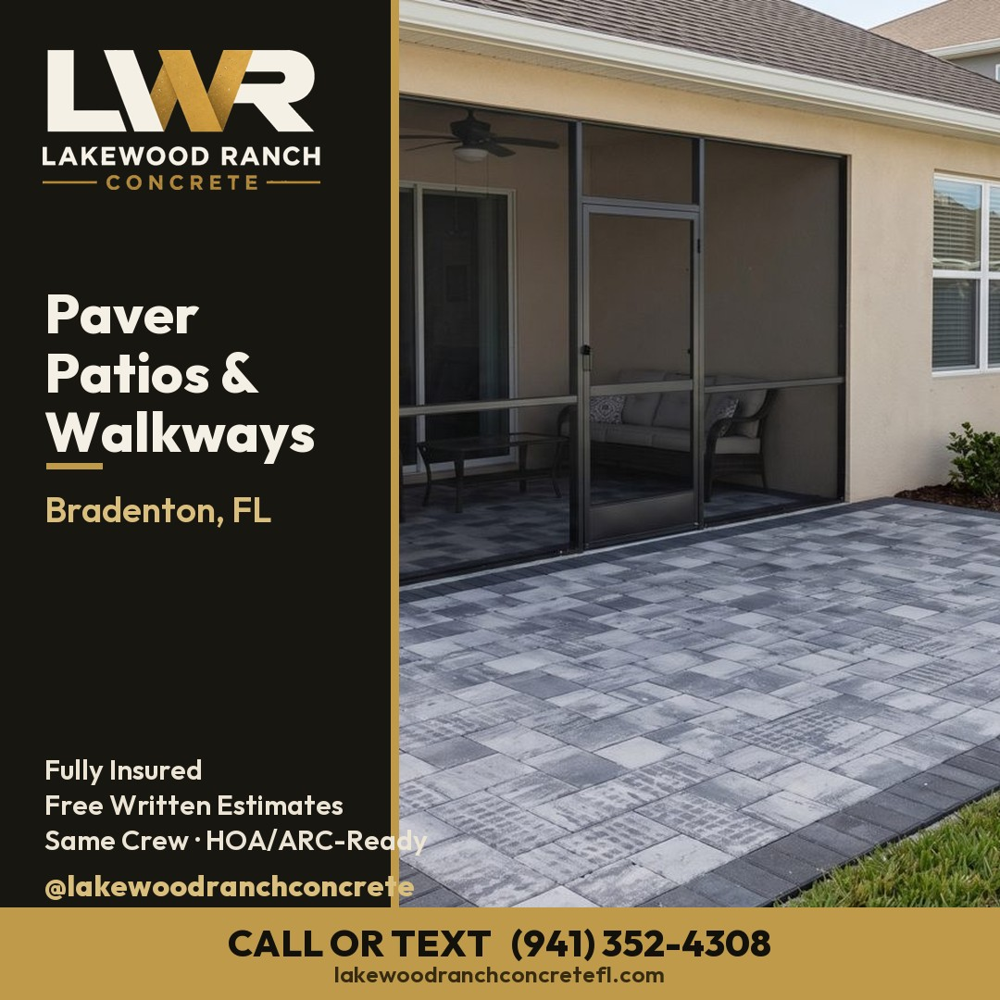 |
Free paver patios estimate in Bradenton, FL. Paver Patios & Walkways — a paver patio or walkway that won't settle, shift or wash out. Serving Bradenton, Lakewood Ranch, Palmetto & Ellenton and the Suncoast. No pressure, fully insured, same crew from start to finish.
📞 Free estimate: (941) 352-4308
🔗 https://lakewoodranchconcretefl.com/paver-patios-walkways/bradenton/
#PaverPatios #Bradenton #BradentonFL #Concrete #Pavers #ConcreteContractor #Hardscape #Hardscaping #LakewoodRanch #Sarasota #ManateeCounty #FloridaHomes #CurbAppeal #OutdoorLiving #SWFL |
| Wednesday 2026-08-12 Tip / Educational T3-Frame |
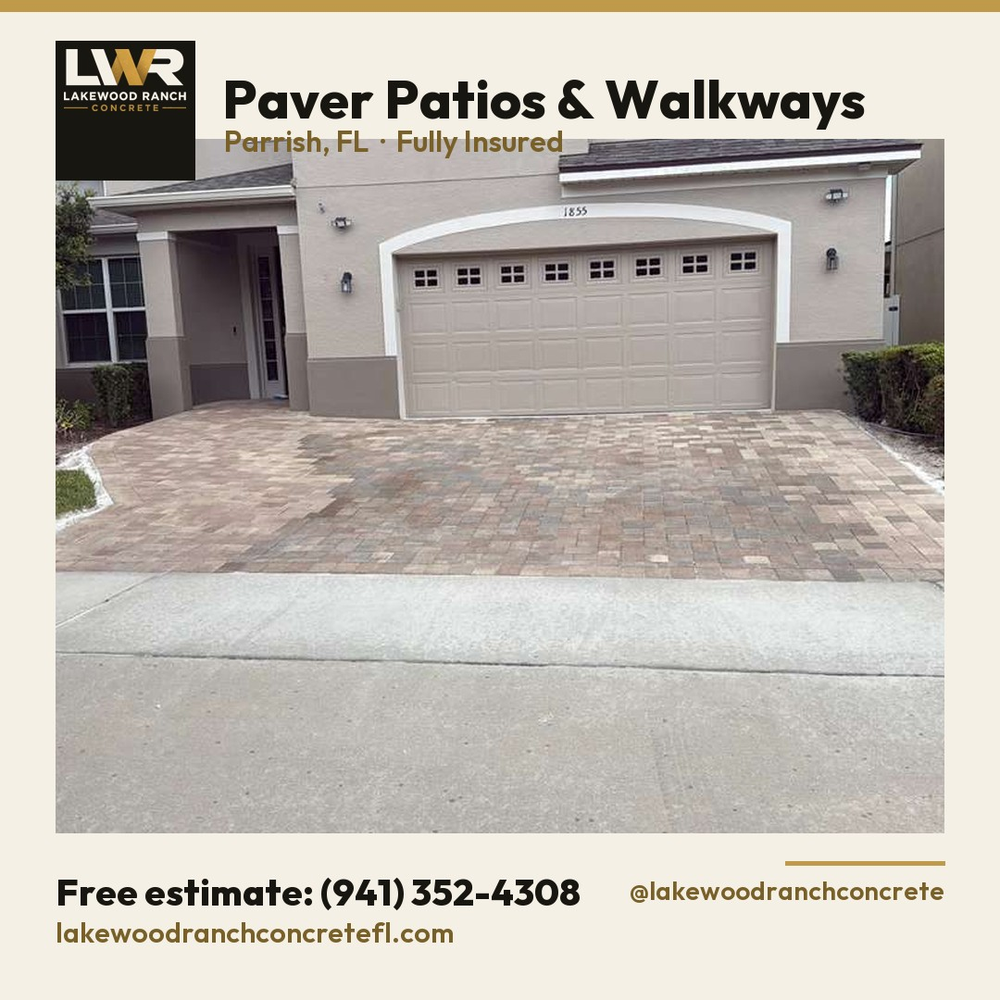 |
Parrish homeowners: polymeric sand and edge restraint are what keep pavers from spreading. Our paver patios start with real base prep and engineered joints — not shortcuts. Paver Patios & Walkways plus concrete & paver driveways, patios, pool decks, travertine, stamped concrete, walkways & sealing across Parrish, Ellenton, Palmetto & Bradenton. Fully insured, free estimates.
📞 Free estimate: (941) 352-4308
🔗 https://lakewoodranchconcretefl.com/paver-patios-walkways/parrish/
#PaverPatios #Parrish #ParrishFL #Concrete #Pavers #ConcreteContractor #Hardscape #Hardscaping #LakewoodRanch #Bradenton #Sarasota #ManateeCounty #FloridaHomes #CurbAppeal #OutdoorLiving #SWFL |
| Friday 2026-08-14 Recent Work T4-Solid |
Another stamped concrete finished in Lakewood Ranch, FL — stamped concrete that reads like natural stone and clears HOA/ARC review. Your Lakewood Ranch project could be next. We install concrete & paver driveways, patios, pool decks, travertine, stamped concrete, walkways & sealing across Lakewood Ranch, Bradenton, Sarasota & Parrish. Fully insured, free written estimates, HOA/ARC-ready.
📞 Free estimate: (941) 352-4308
🔗 https://lakewoodranchconcretefl.com/stamped-concrete/lakewood-ranch/
#StampedConcrete #LakewoodRanch #LakewoodRanchFL #Concrete #Pavers #ConcreteContractor #Hardscape #Hardscaping #Bradenton #Sarasota #ManateeCounty #FloridaHomes #CurbAppeal #OutdoorLiving #SWFL |
|
| WEEK 5 | ||
| Monday 2026-08-17 Service Spotlight T1-Photo |
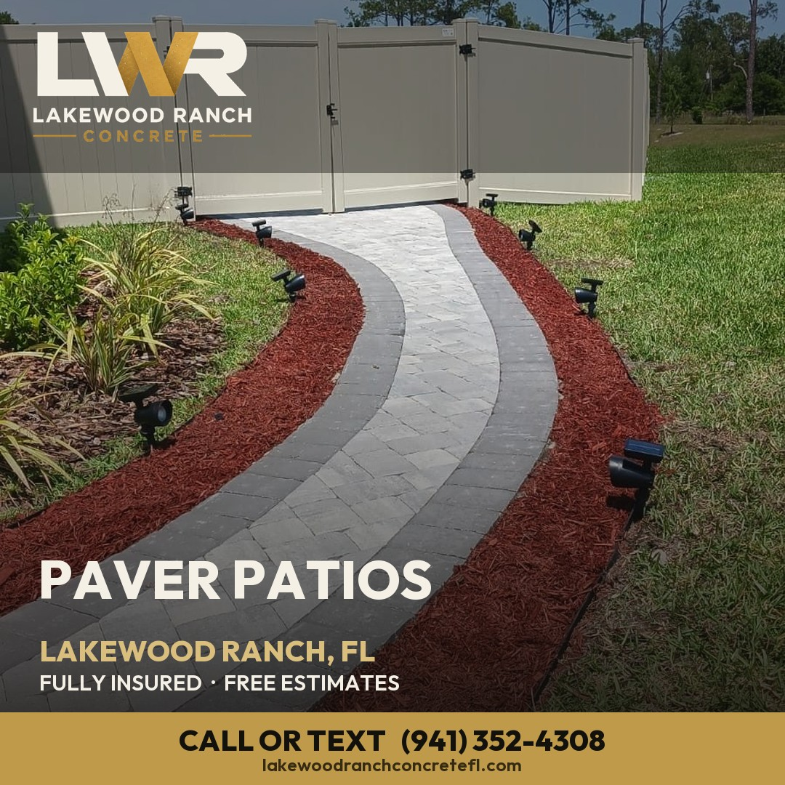 |
Paver Patios & Walkways in Lakewood Ranch, FL done right. Lakewood Ranch Concrete installs a paver patio or walkway that won't settle, shift or wash out. We install concrete & paver driveways, patios, pool decks, travertine, stamped concrete, walkways & sealing across Lakewood Ranch, Bradenton, Sarasota & Parrish and all of Manatee & Sarasota County. Fully insured. Free written estimates.
📞 Free estimate: (941) 352-4308
🔗 https://lakewoodranchconcretefl.com/paver-patios-walkways/lakewood-ranch/
#PaverPatios #LakewoodRanch #LakewoodRanchFL #Concrete #Pavers #ConcreteContractor #Hardscape #Hardscaping #Bradenton #Sarasota #ManateeCounty #FloridaHomes #CurbAppeal #OutdoorLiving #SWFL |
| Wednesday 2026-08-19 Free-Estimate Offer T2-Panel |
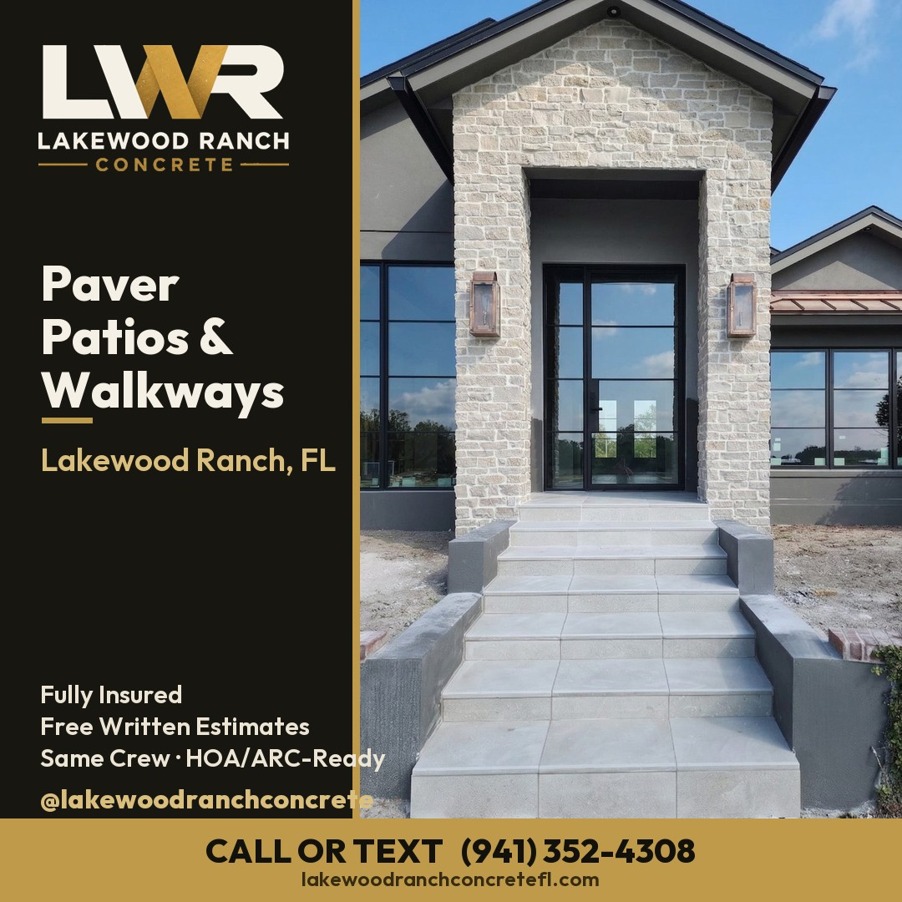 |
Free paver patios estimate in Lakewood Ranch, FL. Paver Patios & Walkways — a paver patio or walkway that won't settle, shift or wash out. Serving Lakewood Ranch, Bradenton, Sarasota & Parrish and the Suncoast. No pressure, fully insured, same crew from start to finish.
📞 Free estimate: (941) 352-4308
🔗 https://lakewoodranchconcretefl.com/paver-patios-walkways/lakewood-ranch/
#PaverPatios #LakewoodRanch #LakewoodRanchFL #Concrete #Pavers #ConcreteContractor #Hardscape #Hardscaping #Bradenton #Sarasota #ManateeCounty #FloridaHomes #CurbAppeal #OutdoorLiving #SWFL |
| Friday 2026-08-21 Tip / Educational T3-Frame |
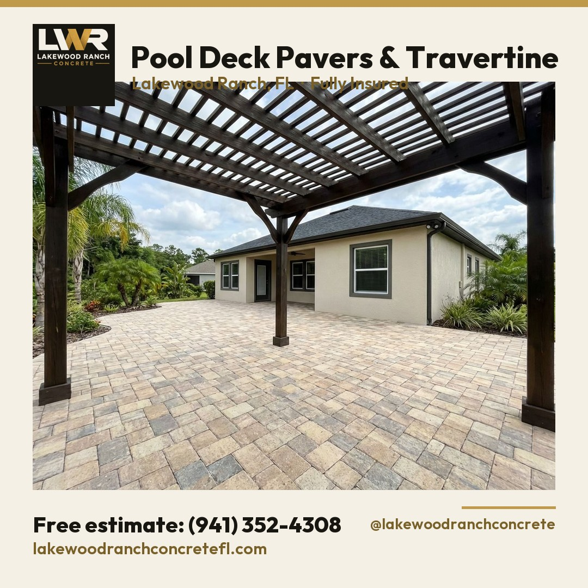 |
Lakewood Ranch homeowners: travertine stays cooler than concrete and pavers flex instead of cracking. Our pool deck pavers start with real base prep and engineered joints — not shortcuts. Pool Deck Pavers & Travertine plus concrete & paver driveways, patios, pool decks, travertine, stamped concrete, walkways & sealing across Lakewood Ranch, Bradenton, Sarasota & Parrish. Fully insured, free estimates.
📞 Free estimate: (941) 352-4308
🔗 https://lakewoodranchconcretefl.com/pool-deck-pavers/lakewood-ranch/
#PoolDeckPavers #LakewoodRanch #LakewoodRanchFL #Concrete #Pavers #ConcreteContractor #Hardscape #Hardscaping #Bradenton #Sarasota #ManateeCounty #FloridaHomes #CurbAppeal #OutdoorLiving #SWFL |
| WEEK 6 | ||
| Monday 2026-08-24 Recent Work T4-Solid |
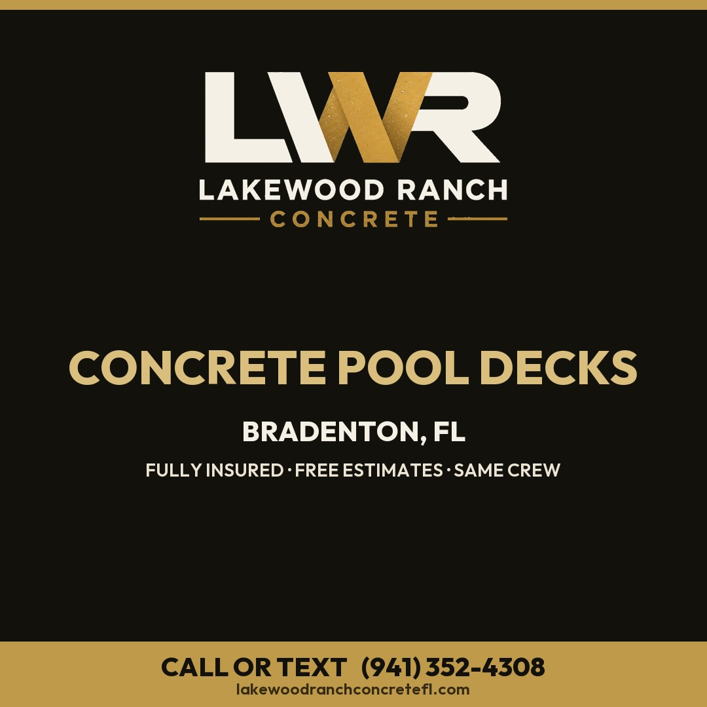 |
Another concrete pool decks finished in Bradenton, FL — a cool-finish, slip-aware concrete pool deck that beats the Florida heat. Your Bradenton project could be next. We install concrete & paver driveways, patios, pool decks, travertine, stamped concrete, walkways & sealing across Bradenton, Lakewood Ranch, Palmetto & Ellenton. Fully insured, free written estimates, HOA/ARC-ready.
📞 Free estimate: (941) 352-4308
🔗 https://lakewoodranchconcretefl.com/concrete-pool-decks/bradenton/
#ConcretePoolDecks #Bradenton #BradentonFL #Concrete #Pavers #ConcreteContractor #Hardscape #Hardscaping #LakewoodRanch #Sarasota #ManateeCounty #FloridaHomes #CurbAppeal #OutdoorLiving #SWFL |
| Wednesday 2026-08-26 Service Spotlight T1-Photo |
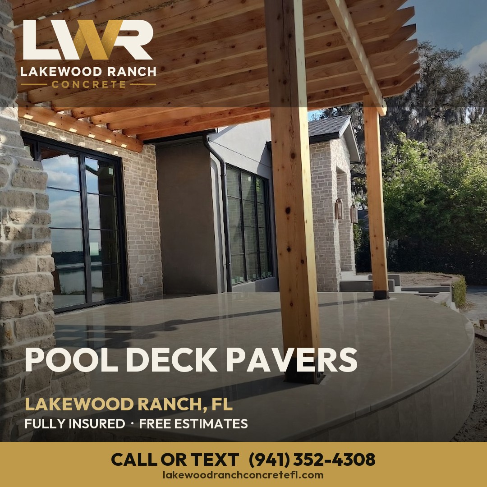 |
Pool Deck Pavers & Travertine in Lakewood Ranch, FL done right. Lakewood Ranch Concrete installs a travertine or paver pool deck, cool underfoot and sealed to last. We install concrete & paver driveways, patios, pool decks, travertine, stamped concrete, walkways & sealing across Lakewood Ranch, Bradenton, Sarasota & Parrish and all of Manatee & Sarasota County. Fully insured. Free written estimates.
📞 Free estimate: (941) 352-4308
🔗 https://lakewoodranchconcretefl.com/pool-deck-pavers/lakewood-ranch/
#PoolDeckPavers #LakewoodRanch #LakewoodRanchFL #Concrete #Pavers #ConcreteContractor #Hardscape #Hardscaping #Bradenton #Sarasota #ManateeCounty #FloridaHomes #CurbAppeal #OutdoorLiving #SWFL |
| Friday 2026-08-28 Free-Estimate Offer T2-Panel |
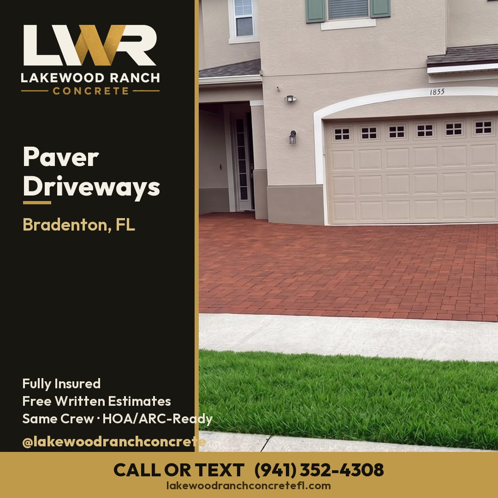 |
Free paver driveways estimate in Bradenton, FL. Paver Driveways — a paver driveway set on a fully compacted base with polymeric joint sand. Serving Bradenton, Lakewood Ranch, Palmetto & Ellenton and the Suncoast. No pressure, fully insured, same crew from start to finish.
📞 Free estimate: (941) 352-4308
🔗 https://lakewoodranchconcretefl.com/paver-driveways/bradenton/
#PaverDriveways #Bradenton #BradentonFL #Concrete #Pavers #ConcreteContractor #Hardscape #Hardscaping #LakewoodRanch #Sarasota #ManateeCounty #FloridaHomes #CurbAppeal #OutdoorLiving #SWFL |
| WEEK 7 | ||
| Monday 2026-08-31 Tip / Educational T3-Frame |
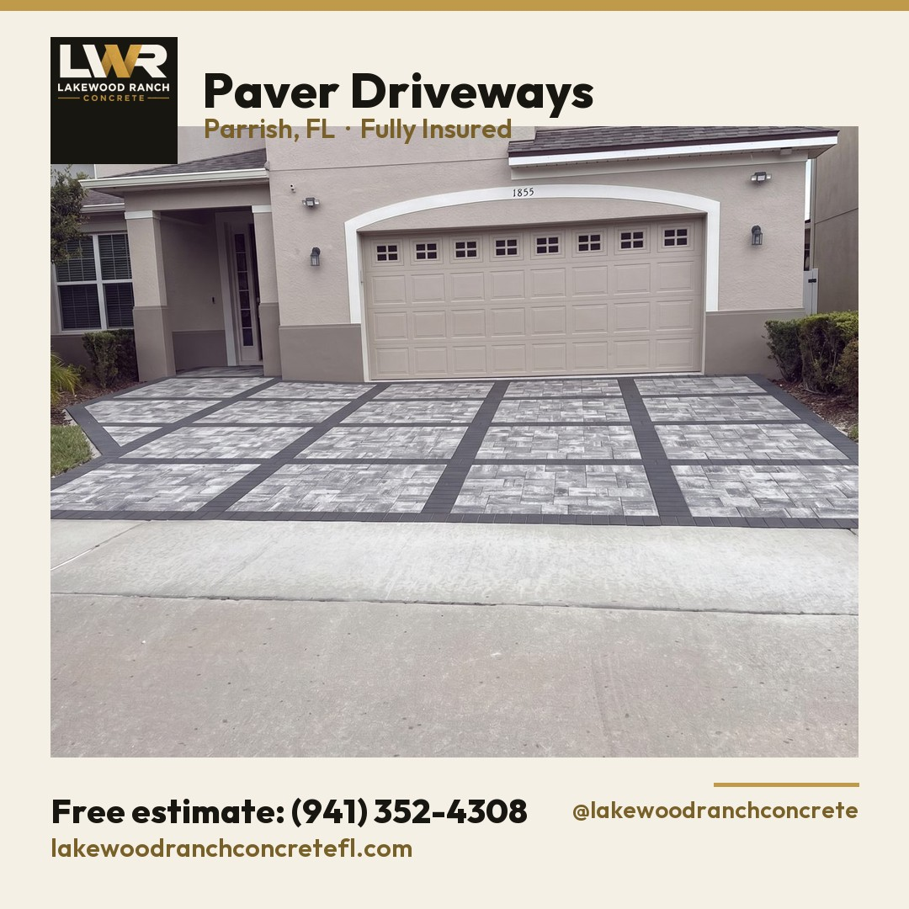 |
Parrish homeowners: most sunken pavers trace back to a rushed, under-compacted base. Our paver driveways start with real base prep and engineered joints — not shortcuts. Paver Driveways plus concrete & paver driveways, patios, pool decks, travertine, stamped concrete, walkways & sealing across Parrish, Ellenton, Palmetto & Bradenton. Fully insured, free estimates.
📞 Free estimate: (941) 352-4308
🔗 https://lakewoodranchconcretefl.com/paver-driveways/parrish/
#PaverDriveways #Parrish #ParrishFL #Concrete #Pavers #ConcreteContractor #Hardscape #Hardscaping #LakewoodRanch #Bradenton #Sarasota #ManateeCounty #FloridaHomes #CurbAppeal #OutdoorLiving #SWFL |
| Wednesday 2026-09-02 Recent Work T4-Solid |
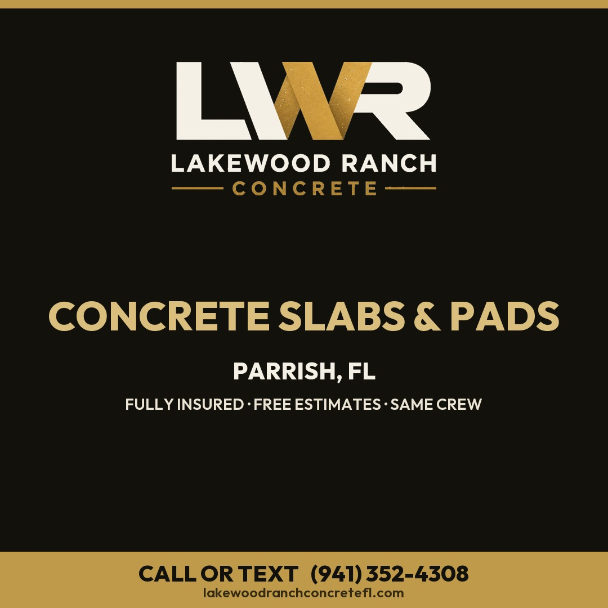 |
Another concrete slabs finished in Parrish, FL — a solid concrete slab or pad on a properly compacted base. Your Parrish project could be next. We install concrete & paver driveways, patios, pool decks, travertine, stamped concrete, walkways & sealing across Parrish, Ellenton, Palmetto & Bradenton. Fully insured, free written estimates, HOA/ARC-ready.
📞 Free estimate: (941) 352-4308
🔗 https://lakewoodranchconcretefl.com/concrete-slabs/parrish/
#ConcreteSlabs #Parrish #ParrishFL #Concrete #Pavers #ConcreteContractor #Hardscape #Hardscaping #LakewoodRanch #Bradenton #Sarasota #ManateeCounty #FloridaHomes #CurbAppeal #OutdoorLiving #SWFL |
| Friday 2026-09-04 Service Spotlight T1-Photo |
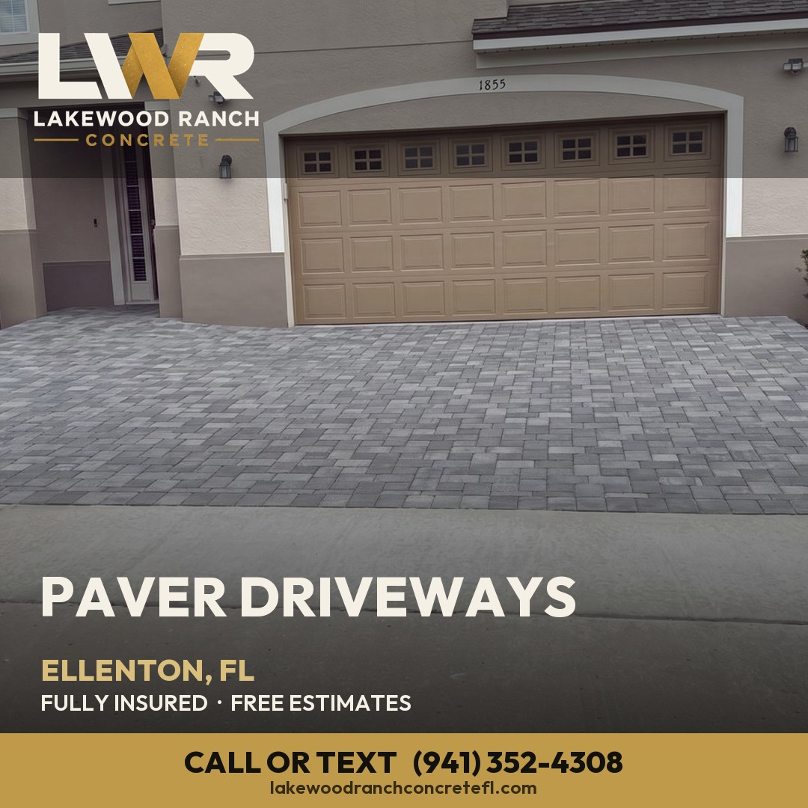 |
Paver Driveways in Ellenton, FL done right. Lakewood Ranch Concrete installs a paver driveway set on a fully compacted base with polymeric joint sand. We install concrete & paver driveways, patios, pool decks, travertine, stamped concrete, walkways & sealing across Ellenton, Palmetto, Parrish & Bradenton and all of Manatee & Sarasota County. Fully insured. Free written estimates.
📞 Free estimate: (941) 352-4308
🔗 https://lakewoodranchconcretefl.com/paver-driveways/ellenton/
#PaverDriveways #Ellenton #EllentonFL #Concrete #Pavers #ConcreteContractor #Hardscape #Hardscaping #LakewoodRanch #Bradenton #Sarasota #ManateeCounty #FloridaHomes #CurbAppeal #OutdoorLiving #SWFL |
| WEEK 8 | ||
| Monday 2026-09-07 Free-Estimate Offer T2-Panel |
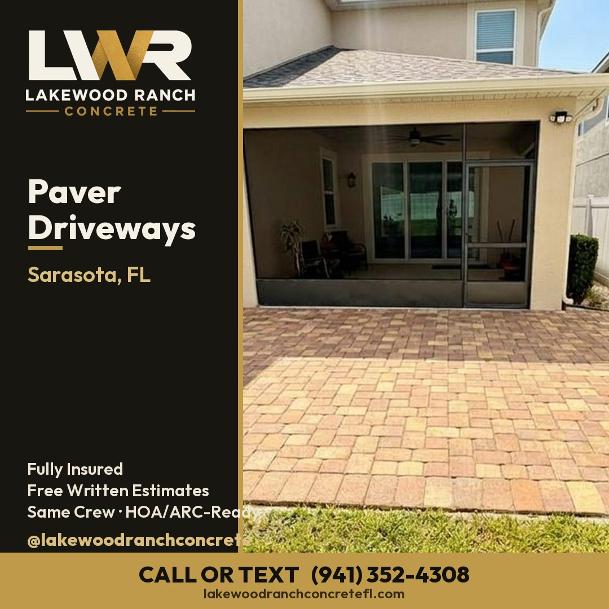 |
Free paver driveways estimate in Sarasota, FL. Paver Driveways — a paver driveway set on a fully compacted base with polymeric joint sand. Serving Sarasota, Lakewood Ranch, Osprey & Venice and the Suncoast. No pressure, fully insured, same crew from start to finish.
📞 Free estimate: (941) 352-4308
🔗 https://lakewoodranchconcretefl.com/paver-driveways/sarasota/
#PaverDriveways #Sarasota #SarasotaFL #Concrete #Pavers #ConcreteContractor #Hardscape #Hardscaping #LakewoodRanch #Bradenton #ManateeCounty #FloridaHomes #CurbAppeal #OutdoorLiving #SWFL |
| Wednesday 2026-09-09 Tip / Educational T3-Frame |
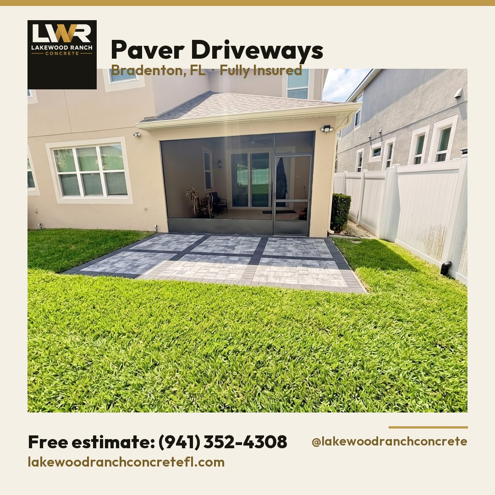 |
Bradenton homeowners: most sunken pavers trace back to a rushed, under-compacted base. Our paver driveways start with real base prep and engineered joints — not shortcuts. Paver Driveways plus concrete & paver driveways, patios, pool decks, travertine, stamped concrete, walkways & sealing across Bradenton, Lakewood Ranch, Palmetto & Ellenton. Fully insured, free estimates.
📞 Free estimate: (941) 352-4308
🔗 https://lakewoodranchconcretefl.com/paver-driveways/bradenton/
#PaverDriveways #Bradenton #BradentonFL #Concrete #Pavers #ConcreteContractor #Hardscape #Hardscaping #LakewoodRanch #Sarasota #ManateeCounty #FloridaHomes #CurbAppeal #OutdoorLiving #SWFL |
| Friday 2026-09-11 Recent Work T4-Solid |
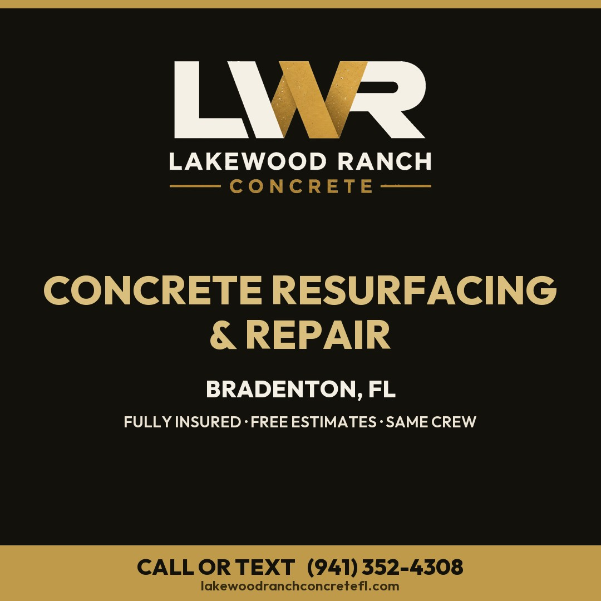 |
Another resurfacing & repair finished in Bradenton, FL — concrete resurfacing that renews a worn, cracked surface without a full tear-out. Your Bradenton project could be next. We install concrete & paver driveways, patios, pool decks, travertine, stamped concrete, walkways & sealing across Bradenton, Lakewood Ranch, Palmetto & Ellenton. Fully insured, free written estimates, HOA/ARC-ready.
📞 Free estimate: (941) 352-4308
🔗 https://lakewoodranchconcretefl.com/concrete-resurfacing/bradenton/
#ResurfacingRepair #Bradenton #BradentonFL #Concrete #Pavers #ConcreteContractor #Hardscape #Hardscaping #LakewoodRanch #Sarasota #ManateeCounty #FloridaHomes #CurbAppeal #OutdoorLiving #SWFL |
| WEEK 9 | ||
| Monday 2026-09-14 Service Spotlight T1-Photo |
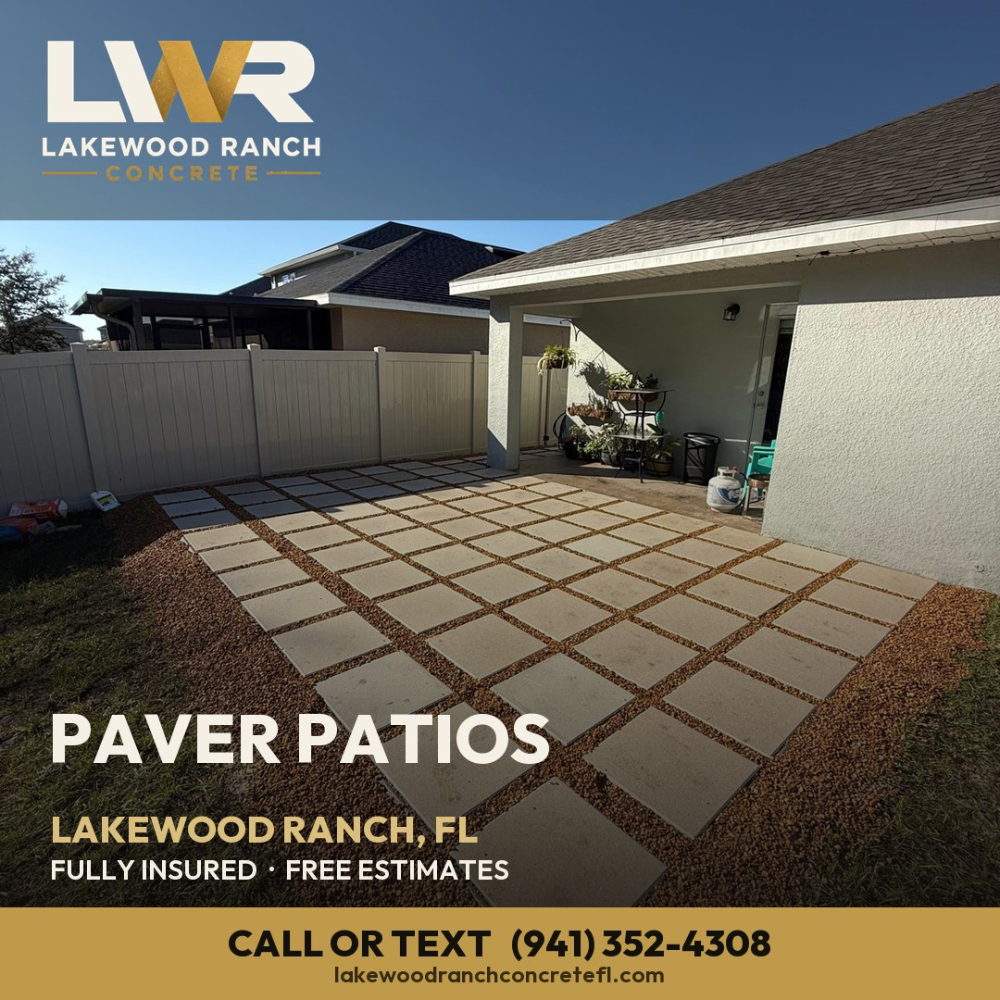 |
Paver Patios & Walkways in Lakewood Ranch, FL done right. Lakewood Ranch Concrete installs a paver patio or walkway that won't settle, shift or wash out. We install concrete & paver driveways, patios, pool decks, travertine, stamped concrete, walkways & sealing across Lakewood Ranch, Bradenton, Sarasota & Parrish and all of Manatee & Sarasota County. Fully insured. Free written estimates.
📞 Free estimate: (941) 352-4308
🔗 https://lakewoodranchconcretefl.com/paver-patios-walkways/lakewood-ranch/
#PaverPatios #LakewoodRanch #LakewoodRanchFL #Concrete #Pavers #ConcreteContractor #Hardscape #Hardscaping #Bradenton #Sarasota #ManateeCounty #FloridaHomes #CurbAppeal #OutdoorLiving #SWFL |
| Wednesday 2026-09-16 Free-Estimate Offer T2-Panel |
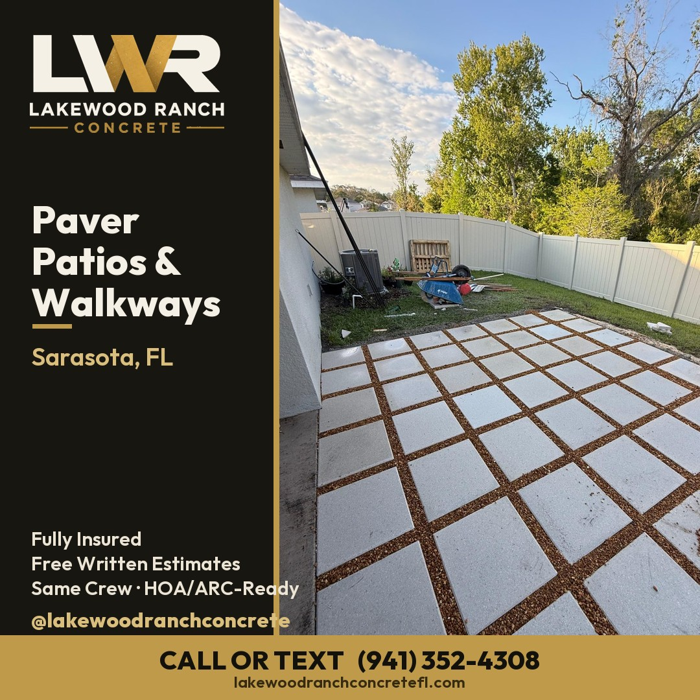 |
Free paver patios estimate in Sarasota, FL. Paver Patios & Walkways — a paver patio or walkway that won't settle, shift or wash out. Serving Sarasota, Lakewood Ranch, Osprey & Venice and the Suncoast. No pressure, fully insured, same crew from start to finish.
📞 Free estimate: (941) 352-4308
🔗 https://lakewoodranchconcretefl.com/paver-patios-walkways/sarasota/
#PaverPatios #Sarasota #SarasotaFL #Concrete #Pavers #ConcreteContractor #Hardscape #Hardscaping #LakewoodRanch #Bradenton #ManateeCounty #FloridaHomes #CurbAppeal #OutdoorLiving #SWFL |
| Friday 2026-09-18 Tip / Educational T3-Frame |
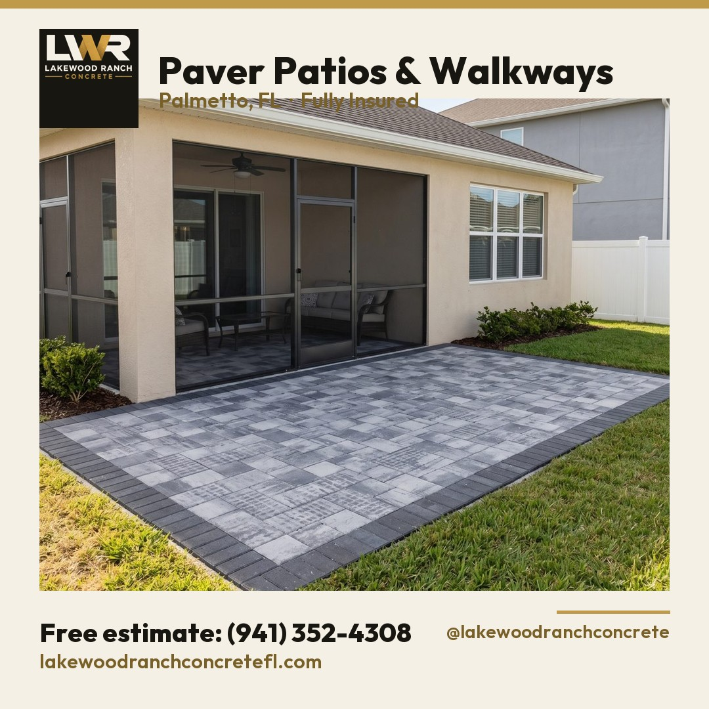 |
Palmetto homeowners: polymeric sand and edge restraint are what keep pavers from spreading. Our paver patios start with real base prep and engineered joints — not shortcuts. Paver Patios & Walkways plus concrete & paver driveways, patios, pool decks, travertine, stamped concrete, walkways & sealing across Palmetto, Ellenton, Bradenton & Parrish. Fully insured, free estimates.
📞 Free estimate: (941) 352-4308
🔗 https://lakewoodranchconcretefl.com/paver-patios-walkways/palmetto/
#PaverPatios #Palmetto #PalmettoFL #Concrete #Pavers #ConcreteContractor #Hardscape #Hardscaping #LakewoodRanch #Bradenton #Sarasota #ManateeCounty #FloridaHomes #CurbAppeal #OutdoorLiving #SWFL |
| WEEK 10 | ||
| Monday 2026-09-21 Recent Work T4-Solid |
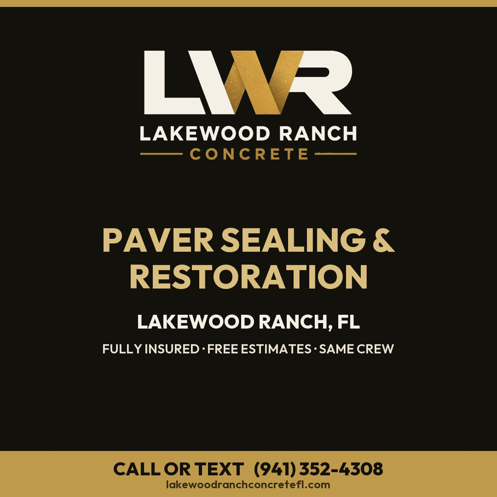 |
Another paver sealing finished in Lakewood Ranch, FL — paver sealing and re-sanding that locks the joints and brings the color back. Your Lakewood Ranch project could be next. We install concrete & paver driveways, patios, pool decks, travertine, stamped concrete, walkways & sealing across Lakewood Ranch, Bradenton, Sarasota & Parrish. Fully insured, free written estimates, HOA/ARC-ready.
📞 Free estimate: (941) 352-4308
🔗 https://lakewoodranchconcretefl.com/paver-sealing/lakewood-ranch/
#PaverSealing #LakewoodRanch #LakewoodRanchFL #Concrete #Pavers #ConcreteContractor #Hardscape #Hardscaping #Bradenton #Sarasota #ManateeCounty #FloridaHomes #CurbAppeal #OutdoorLiving #SWFL |
| Wednesday 2026-09-23 Service Spotlight T1-Photo |
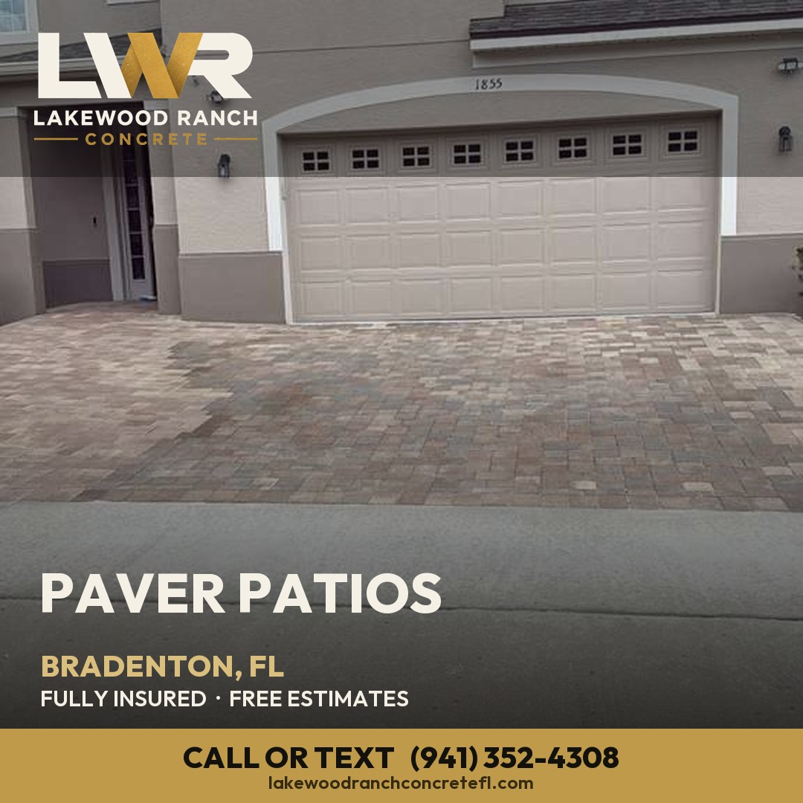 |
Paver Patios & Walkways in Bradenton, FL done right. Lakewood Ranch Concrete installs a paver patio or walkway that won't settle, shift or wash out. We install concrete & paver driveways, patios, pool decks, travertine, stamped concrete, walkways & sealing across Bradenton, Lakewood Ranch, Palmetto & Ellenton and all of Manatee & Sarasota County. Fully insured. Free written estimates.
📞 Free estimate: (941) 352-4308
🔗 https://lakewoodranchconcretefl.com/paver-patios-walkways/bradenton/
#PaverPatios #Bradenton #BradentonFL #Concrete #Pavers #ConcreteContractor #Hardscape #Hardscaping #LakewoodRanch #Sarasota #ManateeCounty #FloridaHomes #CurbAppeal #OutdoorLiving #SWFL |
| Friday 2026-09-25 Free-Estimate Offer T2-Panel |
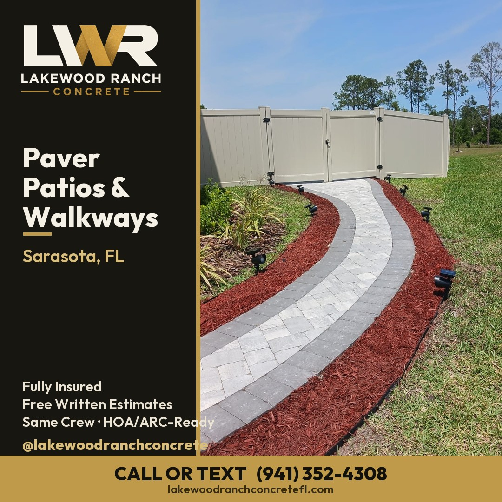 |
Free paver patios estimate in Sarasota, FL. Paver Patios & Walkways — a paver patio or walkway that won't settle, shift or wash out. Serving Sarasota, Lakewood Ranch, Osprey & Venice and the Suncoast. No pressure, fully insured, same crew from start to finish.
📞 Free estimate: (941) 352-4308
🔗 https://lakewoodranchconcretefl.com/paver-patios-walkways/sarasota/
#PaverPatios #Sarasota #SarasotaFL #Concrete #Pavers #ConcreteContractor #Hardscape #Hardscaping #LakewoodRanch #Bradenton #ManateeCounty #FloridaHomes #CurbAppeal #OutdoorLiving #SWFL |
| WEEK 11 | ||
| Monday 2026-09-28 Tip / Educational T3-Frame |
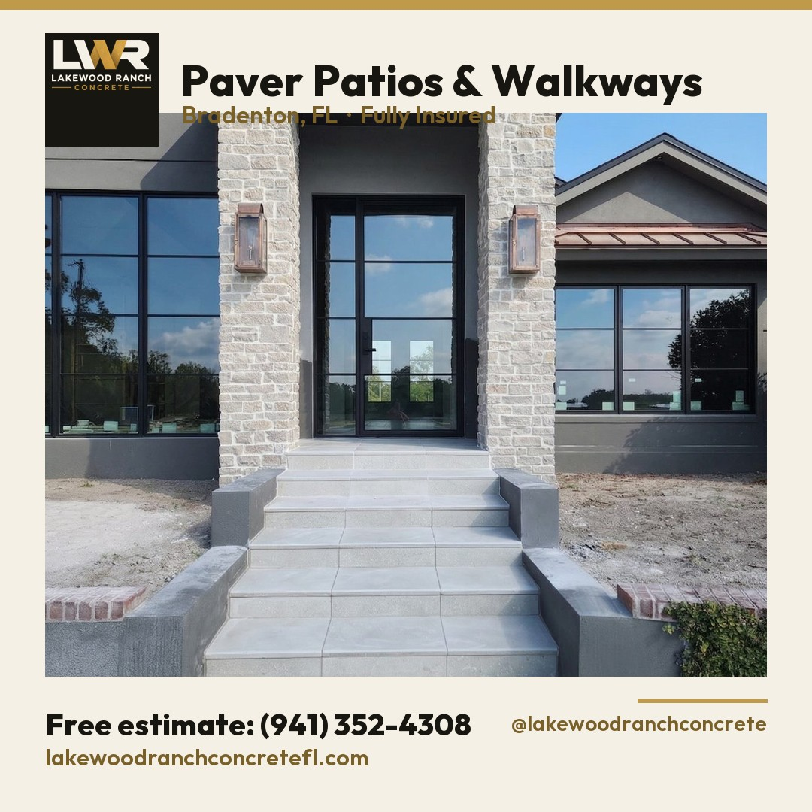 |
Bradenton homeowners: polymeric sand and edge restraint are what keep pavers from spreading. Our paver patios start with real base prep and engineered joints — not shortcuts. Paver Patios & Walkways plus concrete & paver driveways, patios, pool decks, travertine, stamped concrete, walkways & sealing across Bradenton, Lakewood Ranch, Palmetto & Ellenton. Fully insured, free estimates.
📞 Free estimate: (941) 352-4308
🔗 https://lakewoodranchconcretefl.com/paver-patios-walkways/bradenton/
#PaverPatios #Bradenton #BradentonFL #Concrete #Pavers #ConcreteContractor #Hardscape #Hardscaping #LakewoodRanch #Sarasota #ManateeCounty #FloridaHomes #CurbAppeal #OutdoorLiving #SWFL |
| Wednesday 2026-09-30 Recent Work T4-Solid |
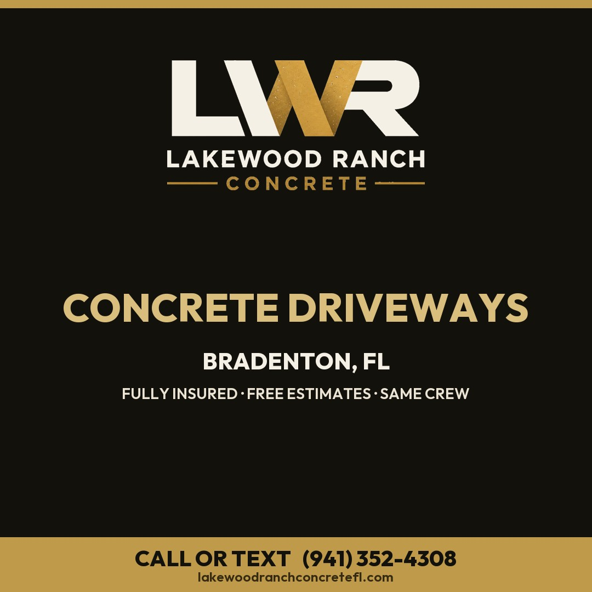 |
Another concrete driveways finished in Bradenton, FL — a poured concrete driveway engineered for Florida heat and shifting soil. Your Bradenton project could be next. We install concrete & paver driveways, patios, pool decks, travertine, stamped concrete, walkways & sealing across Bradenton, Lakewood Ranch, Palmetto & Ellenton. Fully insured, free written estimates, HOA/ARC-ready.
📞 Free estimate: (941) 352-4308
🔗 https://lakewoodranchconcretefl.com/concrete-driveways/bradenton/
#ConcreteDriveways #Bradenton #BradentonFL #Concrete #Pavers #ConcreteContractor #Hardscape #Hardscaping #LakewoodRanch #Sarasota #ManateeCounty #FloridaHomes #CurbAppeal #OutdoorLiving #SWFL |
| Friday 2026-10-02 Service Spotlight T1-Photo |
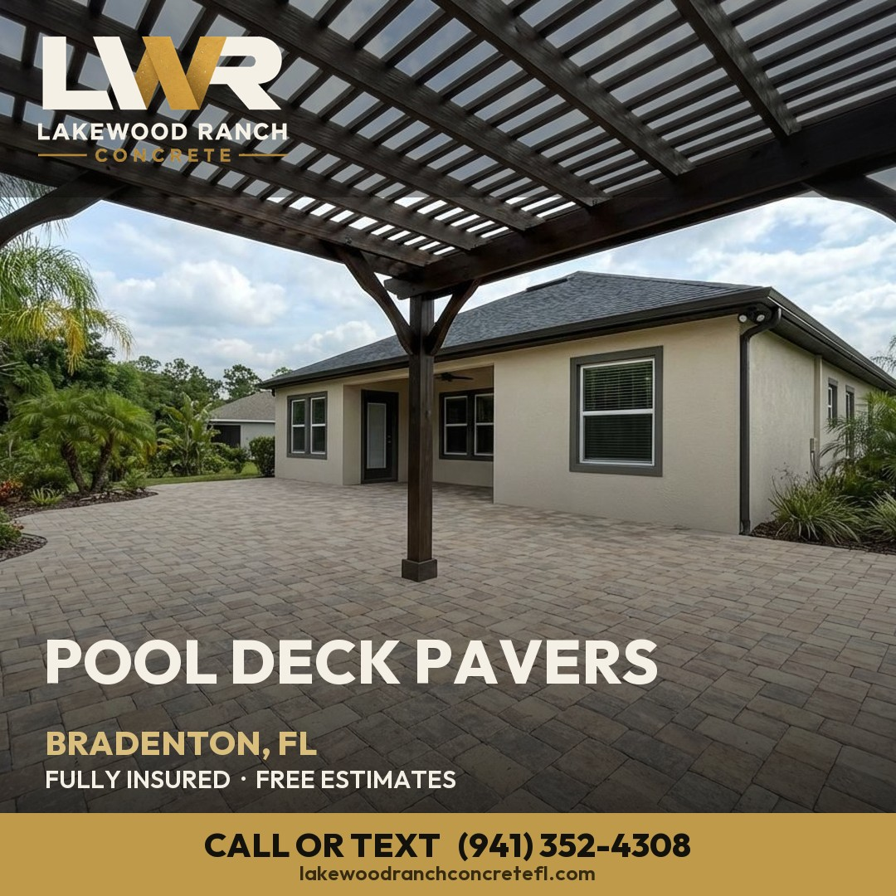 |
Pool Deck Pavers & Travertine in Bradenton, FL done right. Lakewood Ranch Concrete installs a travertine or paver pool deck, cool underfoot and sealed to last. We install concrete & paver driveways, patios, pool decks, travertine, stamped concrete, walkways & sealing across Bradenton, Lakewood Ranch, Palmetto & Ellenton and all of Manatee & Sarasota County. Fully insured. Free written estimates.
📞 Free estimate: (941) 352-4308
🔗 https://lakewoodranchconcretefl.com/pool-deck-pavers/bradenton/
#PoolDeckPavers #Bradenton #BradentonFL #Concrete #Pavers #ConcreteContractor #Hardscape #Hardscaping #LakewoodRanch #Sarasota #ManateeCounty #FloridaHomes #CurbAppeal #OutdoorLiving #SWFL |
| WEEK 12 | ||
| Monday 2026-10-05 Free-Estimate Offer T2-Panel |
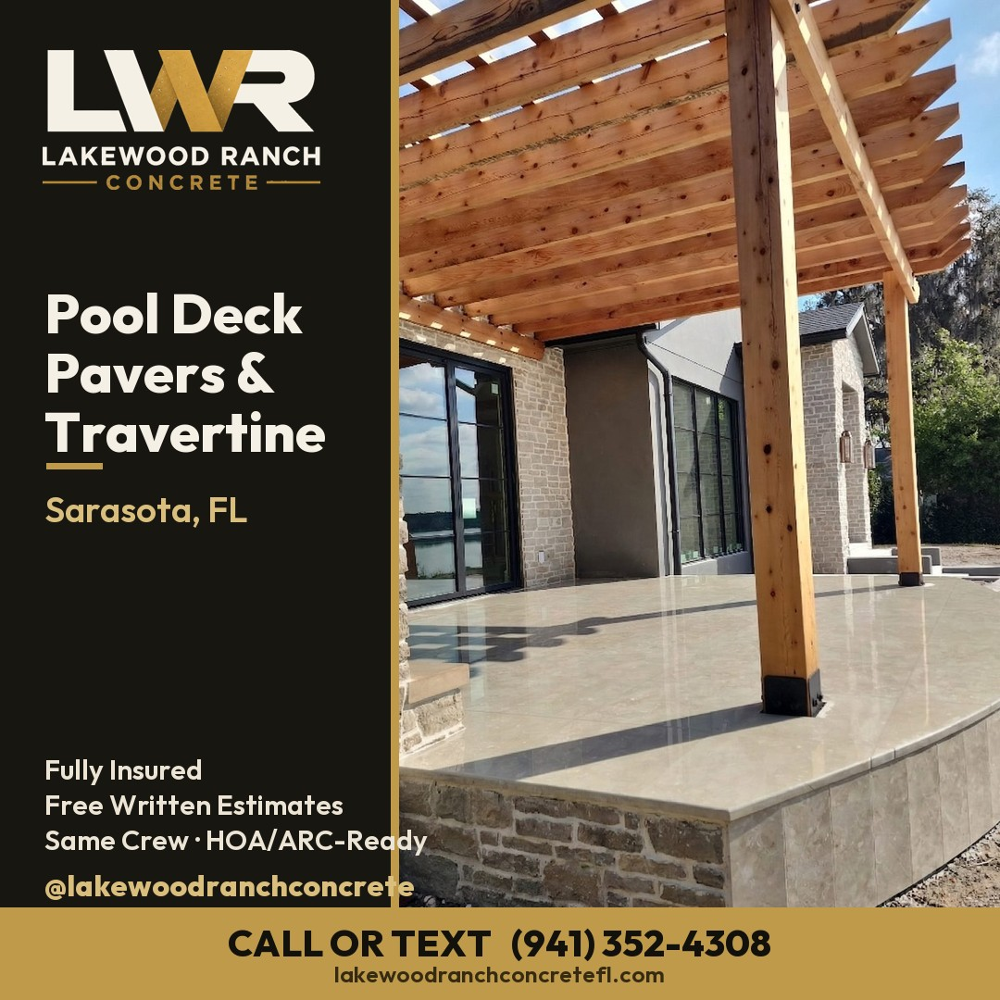 |
Free pool deck pavers estimate in Sarasota, FL. Pool Deck Pavers & Travertine — a travertine or paver pool deck, cool underfoot and sealed to last. Serving Sarasota, Lakewood Ranch, Osprey & Venice and the Suncoast. No pressure, fully insured, same crew from start to finish.
📞 Free estimate: (941) 352-4308
🔗 https://lakewoodranchconcretefl.com/pool-deck-pavers/sarasota/
#PoolDeckPavers #Sarasota #SarasotaFL #Concrete #Pavers #ConcreteContractor #Hardscape #Hardscaping #LakewoodRanch #Bradenton #ManateeCounty #FloridaHomes #CurbAppeal #OutdoorLiving #SWFL |
| Wednesday 2026-10-07 Tip / Educational T3-Frame |
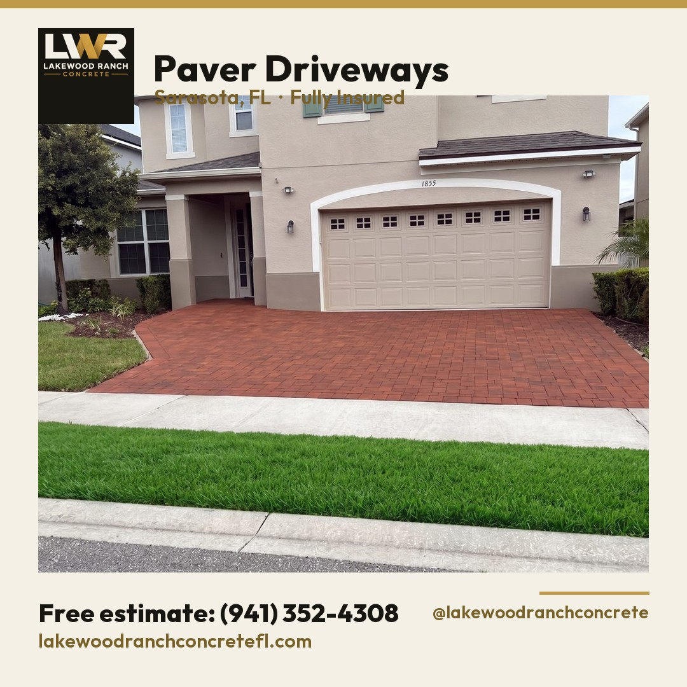 |
Sarasota homeowners: most sunken pavers trace back to a rushed, under-compacted base. Our paver driveways start with real base prep and engineered joints — not shortcuts. Paver Driveways plus concrete & paver driveways, patios, pool decks, travertine, stamped concrete, walkways & sealing across Sarasota, Lakewood Ranch, Osprey & Venice. Fully insured, free estimates.
📞 Free estimate: (941) 352-4308
🔗 https://lakewoodranchconcretefl.com/paver-driveways/sarasota/
#PaverDriveways #Sarasota #SarasotaFL #Concrete #Pavers #ConcreteContractor #Hardscape #Hardscaping #LakewoodRanch #Bradenton #ManateeCounty #FloridaHomes #CurbAppeal #OutdoorLiving #SWFL |
| Friday 2026-10-09 Recent Work T4-Solid |
Another concrete patios finished in Sarasota, FL — a broom, smooth or stamped concrete patio built for Gulf Coast sun and drainage. Your Sarasota project could be next. We install concrete & paver driveways, patios, pool decks, travertine, stamped concrete, walkways & sealing across Sarasota, Lakewood Ranch, Osprey & Venice. Fully insured, free written estimates, HOA/ARC-ready.
📞 Free estimate: (941) 352-4308
🔗 https://lakewoodranchconcretefl.com/concrete-patios/sarasota/
#ConcretePatios #Sarasota #SarasotaFL #Concrete #Pavers #ConcreteContractor #Hardscape #Hardscaping #LakewoodRanch #Bradenton #ManateeCounty #FloridaHomes #CurbAppeal #OutdoorLiving #SWFL |
|